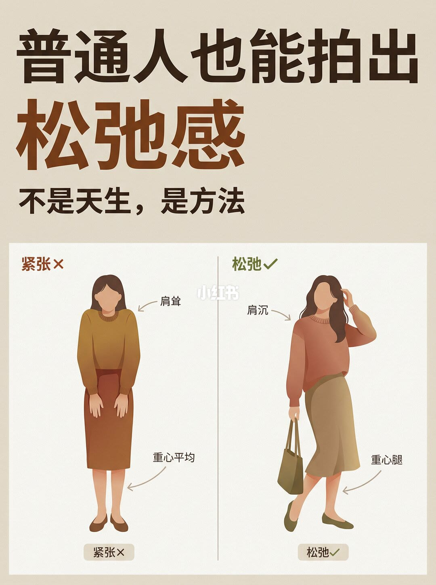
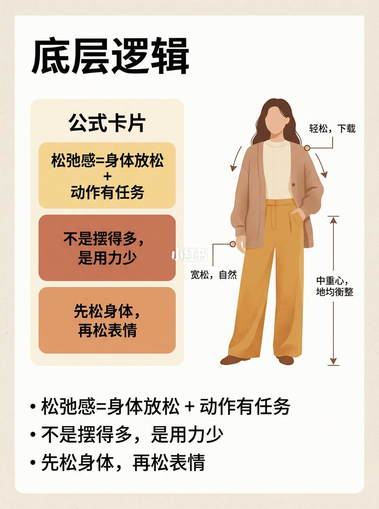
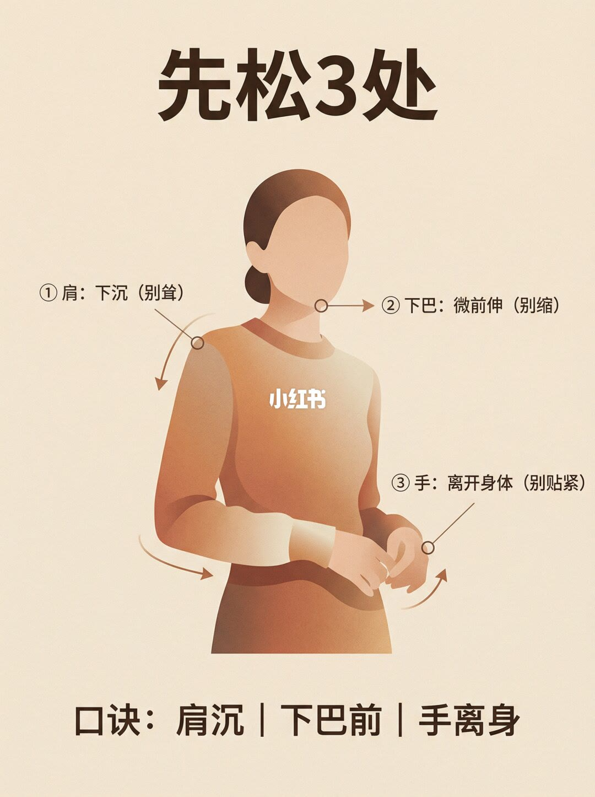
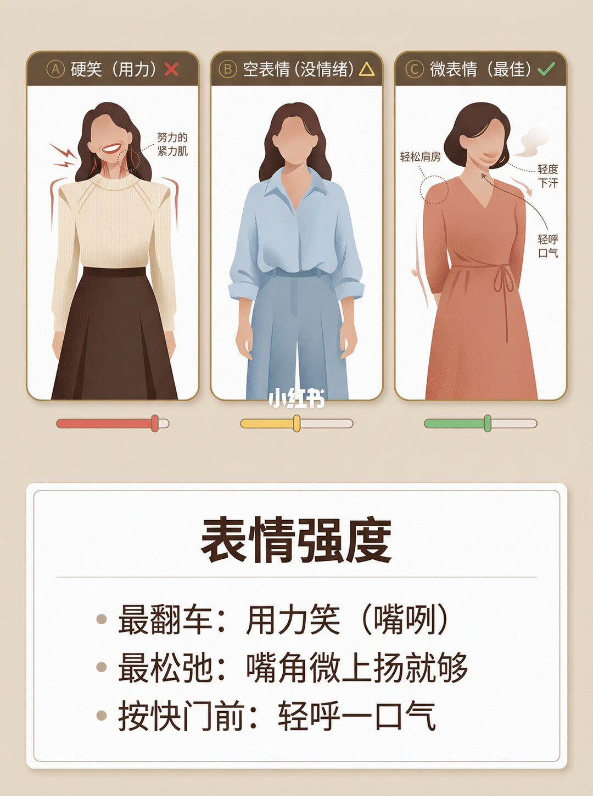
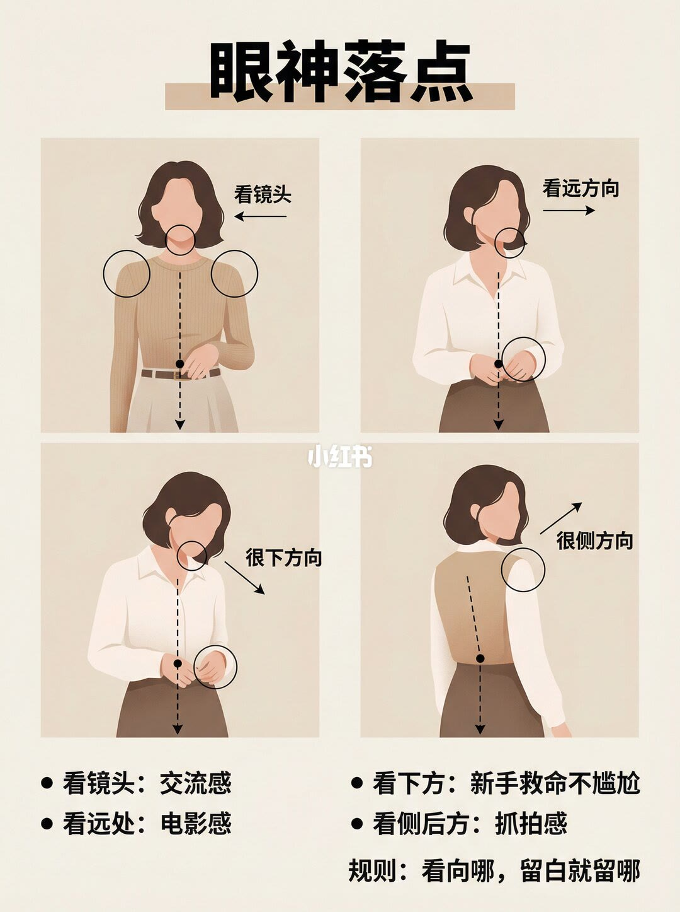
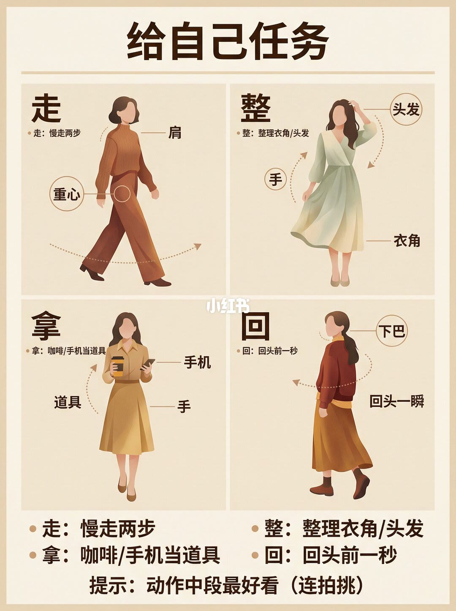
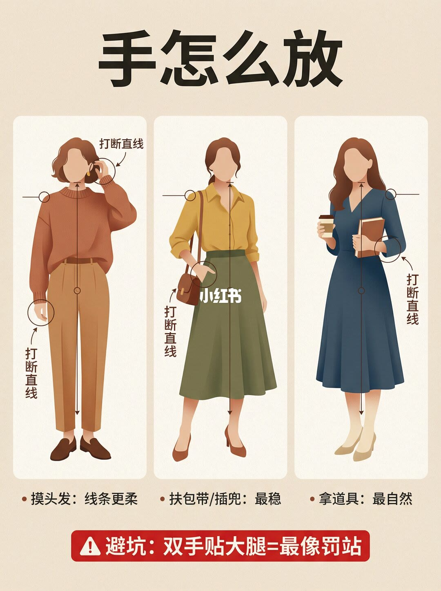
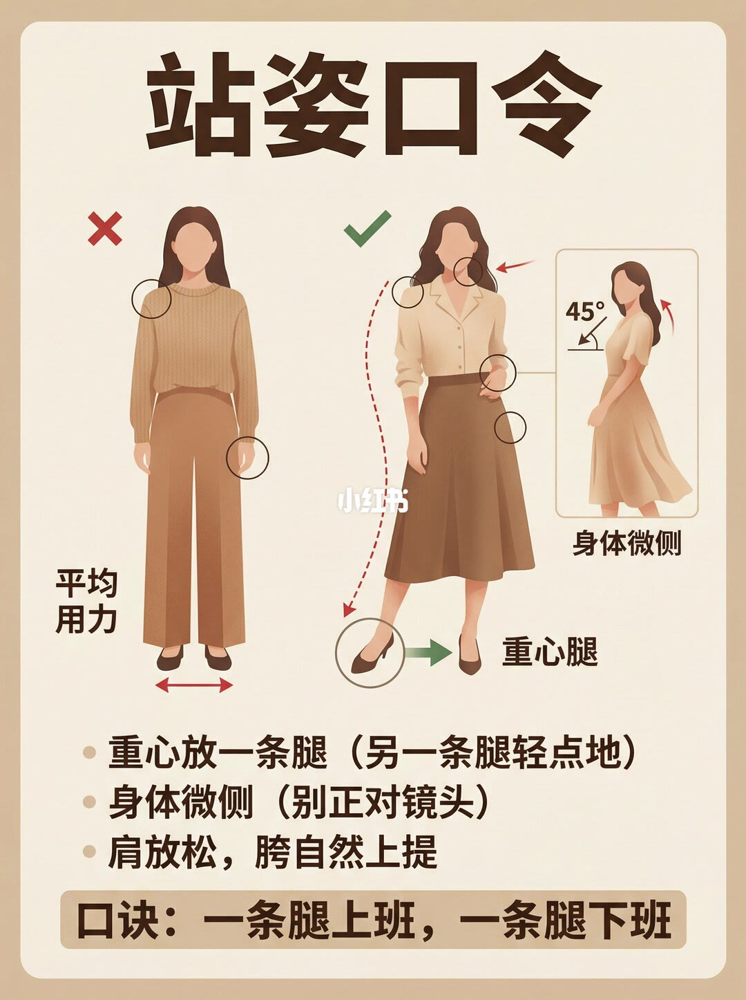
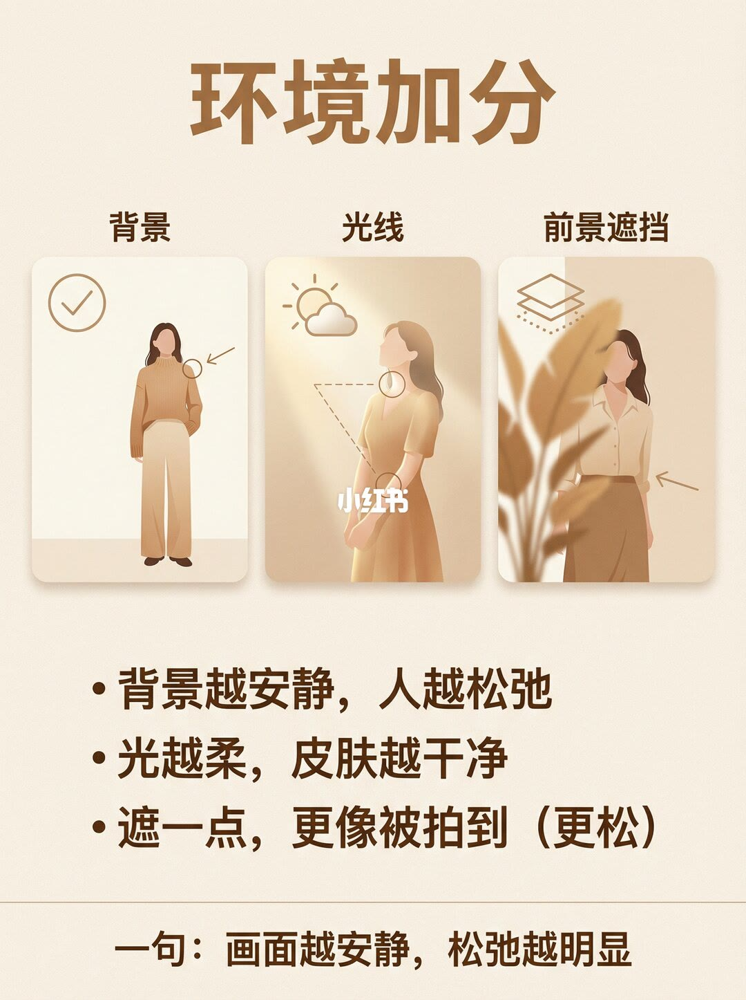
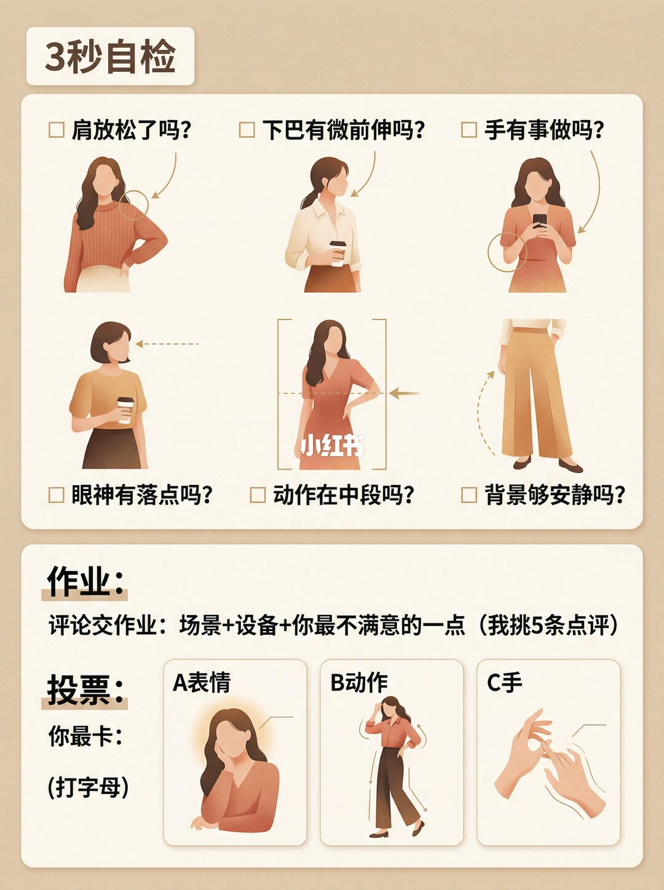

图文实录 · 小红书 · 爱拍照的七十(努力涨粉中)
松弛感不是天生的
封面把结论写在副题上：不是天生，是方法。松弛感被写成少用力，再给身体一个任务。先松肩、下巴和手，表情只留嘴角微扬，眼神要有落点，手去做摸头发、扶包带或拿道具，站着把重量放在一条腿上。环境靠安静背景、柔光和一点遮挡。三秒自检把这些收成六问。
1/10
封面：紧张和松弛并排

大标题「普通人也能拍出松弛感」，下一行「不是天生，是方法」。左栏标「紧张×」，箭头写肩耸、重心平均，底栏再写紧张。右栏标「松弛」，箭头写肩沉、重心腿，底栏再写松弛。右栏人物手里的包、腿的前后，图上没有印成句子，精确落点无法确认。
2/10
公式：身体放松，动作有任务

标题「底层逻辑」，旁边是「公式卡片」。三句：松弛感等于身体放松加动作有任务；不是摆得多，是用力少；先松身体，再松表情。页底用项目符号把这三句再写一遍。右侧插图有肩、袖口和裤腿的箭头，旁注识别不稳定，不把看不清的短句写成原文。
3/10
先松肩、下巴和手

标题「先松3处」。①肩：下沉（别耸）。②下巴：微前伸（别缩）。③手：离开身体（别贴紧）。口诀：肩沉，下巴前，手离身。三处都标了圆点和箭头，箭头没有再写成角度。
4/10
表情强度：用力笑最翻车

标题「表情强度」。三栏能读出的是：硬笑（用力），栏末有叉；空表情（没情绪）；微表情（最佳），栏末有勾。第二栏的中间符号无法确认。底栏三条：最翻车是用力笑（嘴咧）；最松弛是嘴角微上扬就够；按快门前轻呼一口气。第三栏肩、下颌旁的短注识别不稳定，无法确认完整原文。三根强度条没有刻度数字。
5/10
眼神要有落点，留白跟着看的方向

标题「眼神落点」。页底四条：看镜头，交流感；看远处，电影感；看下方，新手救命不尴尬；看侧后方，抓拍感。规则：看向哪，留白就留哪。四格图上除「看镜头」外的短标签无法确认，四种方向以页底列表为准。
6/10
给自己四个任务，挑动作中段

标题「给自己任务」。四格和页底一致：走，慢走两步；整，整理衣角或头发；拿，咖啡或手机当道具；回，回头前一秒。提示：动作中段最好看（连拍挑）。插图上还标了肩、重心、头发、衣角、手机、道具、手、下巴、回头一瞬，这些是位置名，没有再加一句解释。
7/10
手要打断直线，别贴大腿

标题「手怎么放」。三个人物旁都写「打断直线」。页底：摸头发，线条更柔；扶包带或插兜，最稳；拿道具，最自然。避坑：双手贴大腿等于最像罚站。每只手具体搭在哪根线的交点，图上没有再编号。
8/10
一条腿承重，身体微侧

标题「站姿口令」。左图双脚之间写平均用力，并打叉。中图一条腿标重心腿。右侧小图写身体微侧，并标 45°。三条：重心放一条腿（另一条腿轻点地）；身体微侧（别正对镜头）；肩放松，胯自然上提。口诀：一条腿上班，一条腿下班。45°写在侧身示意上，页上没有写成必须精确到一度。
9/10
画面越安静，松弛越明显

标题「环境加分」。三张卡：背景、光线、前景遮挡。三条：背景越安静，人越松弛；光越柔，皮肤越干净；遮一点，更像被拍到（更松）。收成一句：画面越安静，松弛越明显。柔到什么程度、遮住多少，没有数字。
10/10
六问自检，再交作业

标题「3秒自检」。六问：肩放松了吗；下巴有微前伸吗；手有事做吗；眼神有落点吗；动作在中段吗；背景够安静吗。作业：评论交作业，场景加设备加你最不满意的一点，作者写挑 5 条点评。投票：你最卡，打字母。A 表情，B 动作，C 手。这一页没有新的距离或角度。
收尾
少用力，再给一个任务
结论
松弛感在这十页里是方法：身体少用力，动作有任务。肩下沉，下巴微前伸，手离开身体。表情最翻车的是用力咧嘴，够用的是嘴角微上扬，按快门前轻呼一口气。眼神四选一，看向哪就把留白留在哪。手用摸头发、扶包带、插兜或道具打断直线，不要贴大腿。站姿把重量放在一条腿上，身体微侧。环境上，背景越安静、光越柔、遮一点，松弛越明显。拍前用六问过一遍。
支撑页
紧张和松弛的肩、重心对照在 1/10。公式三句在 2/10。肩、下巴、手的口诀在 3/10。表情三档和按快门前呼气在 4/10。四种眼神和留白规则在 5/10。走、整、拿、回以及动作中段在 6/10。三种放手和贴大腿的避坑在 7/10。一条腿承重、微侧和 45° 示意在 8/10。背景、光线、前景遮挡在 9/10。六问、交作业和投票在 10/10。
边界
十页没有光圈、快门、感光度，也没有焦段。45° 是侧身示意上的标记，没有测量方法。表情强度条没有刻度。柔光和「遮一点」没有比例。第 2 页插图旁注、第 4 页第三栏短注、第 5 页四格图上除「看镜头」外的短标签，识别不稳定，正文不采用。第 10 页「挑 5 条」是互动，不是拍摄步骤。示例人物是否实拍，画面无法确认。